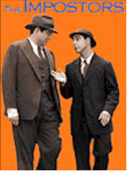

Contents | Features | Reviews | News | Archives | Store |
 |
|
| Movie Credits | Buy It! |
The Impostors
Review by Elias
Savada
Posted 2 October 1998
|  | Written and Directed by Stanley Tucci. Starring
Oliver Platt, Stanley Tucci, |
Whoa! Didn’t I say this was a comedy? Well, look at the title. Take a minute. Don’t worry, no one’s dead. Next scene: Arthur berates Maurice, "You stole my death!" As the boys await their fame, let alone their next meal, we learn they are passionate, hungry thespians, eager to hone their profession in hopes of some day performing a "hall of fame" death scene.
Until that precious moment, they’ll bounce technique off each other and the world in between auditions (one involving a uncredited cameo by Woody Allen) and schemes for their next meal, even if the latter turns out to be just a puff pastry from a local bakery. Their over-acting (intentional or not) and missed cues often brings a hilarious means to an end. One reward is two unwanted tickets to a hammed-up Hamlet featuring egotistic Jeremy Burtom (Alfred Molina) a Barrymoresque drunk over-admired by his public. When Burtom and his entourage overhear A&M aping the maestro’s performance, he flies off in a rage after the pair.
The chase is on.
And it doesn’t stop until you’ve stopped laughing an hour or so later. The harried actors end up dockside asleep in a straw-filled crate and become stowaways on the S.S. Intercontinental, a Paris-bound luxury cruise ship, with their nemesis (oh no!) aboard as well. It’s a ship of fools (the film’s working title, too) where the large ensemble cast is unmasked in briskly directed bits and pieces. Mad hatters all. Quirky, manic, devious, deadly. It’s a who’s who of Alice’s wonderland and A&M get caught among them all, discovering other posers amongst the crew and human cargo. Among those along for the ride are Happy Franks (Steve Buscemi), a depressingly suicidal lounge singer, a mysterious deposed and distraught queen (Isabella Rossellini), a insidious First Mate (Tony Shalhoub) who speaks a language best described as goulash, and Meistrich (Campbell Scott), an autocratic, boot-slapping hellhound with a facial scar, nasty bridle crop, and an overzealous passion for Lily (Lili Taylor), the head stewardess who befriends puppy-dogs A&M and tries to keep them out of harm’s way. Throw in a wealthy Moorish sheik, an over-ripe tennis pro, an Italian captain, a gold-digging dowager, her wallflower daughter, a pair of fortune hunters, and a dozen other nutty characters and watch the hi-jinx develop in gloriously outrageous succession.
Tucci has a keen sense of physical and visual comedy here, and handles the talented cast with kid gloves. Many of the actors appeared in his earlier film and you get the luscious feeling that each is a richly defined piece in the film’s witty script. No one shines alone; they are brilliant together. Tucci makes imaginative use of the music track, stopping it abruptly at sudden lapses in the chase and just as quickly restarting it moments later when the hunt resumes. He makes incredibly perceptive use of sub-titles in one particular sequence (it’s VERY distinctive and VERY funny). There’s also his marvelous blocking of the cast against the pseudo-theatrical settings. It’s an overblown game of musical rooms. The movie has a histrionic feel of cycloramas and greasepaint that heightens the voyage (I never did see the ocean) while putting the cast through their frantic pacing, contrived romantic ploddings (in a funny way, of course), and sets that scream Room Service. Kudos to Art-Deco production designer Andy Jackness, director of photography Ken Kelsch, and costume designer Juliet Polcsa, all Big Night alumni and obviously just as enthusiastic in handling their chores as the rest of the cast and crew.
This is easily one of the funniest films of the year and in many a year. A laugh riot. Honest. Please, Mum, give me more!
Contents | Features | Reviews | News | Archives | Store
Copyright © 1999 by Nitrate Productions, Inc. All Rights Reserved.